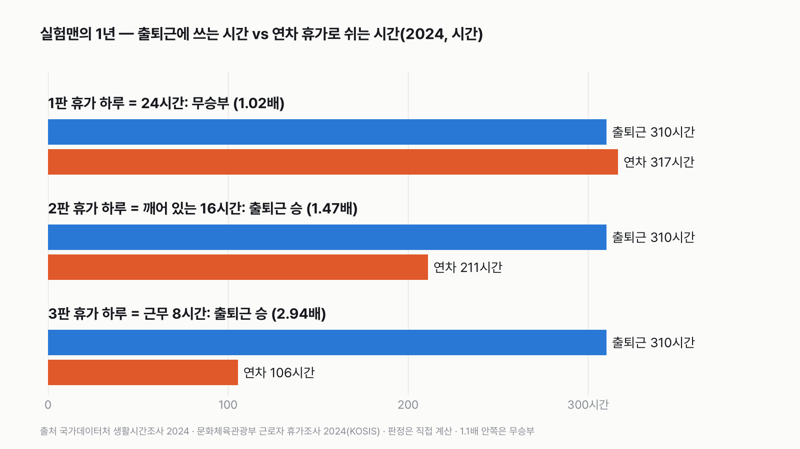
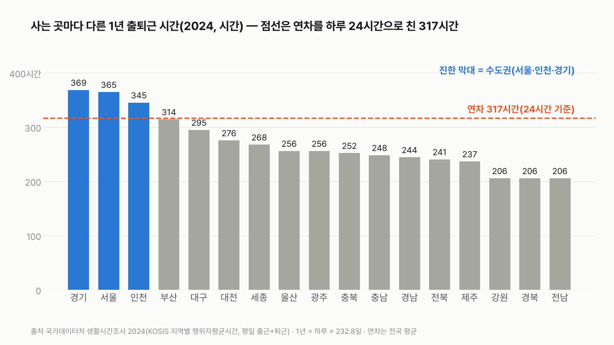
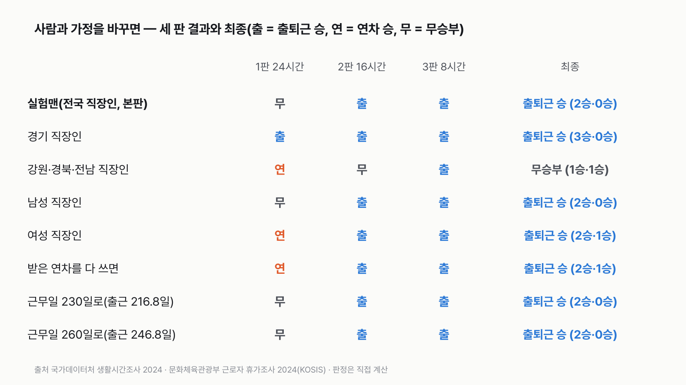

실험맨의 1년, 출퇴근에 쓰는 시간이 연차 휴가보다 길까
출근길 지하철에서 보내는 시간과 손꼽아 기다리는 연차, 1년으로 모으면 어느 쪽이 더 클지 골라 주세요.
독자 투표
실험맨이 1년 동안 출퇴근에 쓰는 시간과 연차 휴가로 쉬는 시간, 세 판 승부로 더 긴 쪽은?
- 이번 실험맨은 평일마다 집에서 일터로 오가는 평균 직장인이에요. 1년 동안 출퇴근에 쓰는 시간과 연차 휴가로 쉬는 시간을 견줘요.
- 출퇴근은 하루 시간일지로 잰 값, 연차는 직장인이 실제로 쓴 휴가 일수예요. 둘 다 2024년 국가 조사예요.
- 휴가 하루를 몇 시간으로 칠지에 따라 판이 갈려요. 하루 통째로(24시간), 깨어 있는 시간(16시간), 근무 시간만(8시간), 세 판으로 나눠 겨뤄요.
조건과 규칙
- 실험맨: 평일에 출근하고 퇴근한 사람의 평균이에요. 출퇴근은 표의 '취업' 구분 기준 값이에요. 표에는 취업·비취업 두 칸뿐이라 임금근로자만 따로 고른 값은 아니에요. 출퇴근 시간은 그날 실제로 출근(또는 퇴근)한 사람만의 평균을 써요. 재택근무나 쉬는 날의 0분은 넣지 않아요.
- 출퇴근 쪽: 하루 출퇴근 시간 = 출근 시간 + 퇴근 시간(2024년 평일)이에요. 1년 출근일은 공휴일을 뺀 평일(근무일) 246일(2024년 평일 262일 − 평일 공휴일 16일)에서 실험맨이 쓴 연차 일수를 다시 뺀 날로 정했어요.
- 연차 쪽: 직장인이 1년 동안 실제로 사용한 연차 일수 평균(2024년)이에요. 받은 일수가 아니라 쓴 일수예요.
- 세 판: 출퇴근 쪽은 세 판 모두 같은 값이에요. 휴가 하루의 길이만 바꿔요.
- 1판: 휴가 하루 = 24시간(하루 통째로). 휴가 쪽에 가장 유리해요.
- 2판: 휴가 하루 = 16시간(잠 8시간을 뺀 깨어 있는 시간).
- 3판: 휴가 하루 = 8시간(일을 쉬어 되찾은 근무 시간만). 출퇴근 쪽에 가장 유리해요.
- 판정: 판마다 더 긴 쪽이 짧은 쪽의 1.1배 이상이면 승, 1.1배가 안 되면 무승부예요. 최종은 이긴 판 수로 정해요.
결과 요약
3판 출퇴근 2승 1무 → 최종 출퇴근 승
- 실험맨의 하루 출퇴근은 왕복 80분(출근 40분, 퇴근 40분)이에요. 1년 232.8일을 오가면 310시간이에요.
- 연차는 1년 13.2일을 썼어요. 하루를 24시간으로 치면 317시간이라 출퇴근과 거의 같아요(1.02배, 무승부).
- 휴가 하루를 깨어 있는 16시간으로 치면 211시간, 근무 8시간으로 치면 106시간이에요. 두 판 모두 출퇴근이 이겨요(1.47배, 2.94배). 3판은 처음부터 출퇴근에 유리하게 짠 판이에요.
그래서? 1년 출퇴근을 24시간짜리 날로 바꾸면 12.9일이에요. 1년 동안 연차로 쉰 13.2일과 하루도 차이 나지 않아요. 경기·서울 직장인은 하루 통째로 쳐도 출퇴근이 이겨요(인천은 아슬아슬하게 무승부).
내 출퇴근 왕복 분 × 3.9를 하면 내 1년 출퇴근 시간이 나와요(232.8일 ÷ 60 = 3.88).
독자 예상 vs 데이터 결과
실험맨이 1년 동안 출퇴근에 쓰는 시간과 연차 휴가로 쉬는 시간, 세 판 승부로 더 긴 쪽은?
데이터로 보면 출퇴근. 하루 왕복 80분을 1년 232.8일 모으면 310시간이에요. 연차 13.2일을 24시간으로 치면 317시간이라 비겨요(1.02배). 16시간으로 치면 211시간, 8시간으로 치면 106시간이라 출퇴근이 이겨요. 2승 1무로 출퇴근 승이에요.


| 판 | 1년 출퇴근 | 1년 연차 | 배수 | 승자 |
|---|---|---|---|---|
| 1판 휴가 하루 = 24시간 | 310시간 | 317시간 | 1.02배 | 무승부 |
| 2판 휴가 하루 = 16시간 | 310시간 | 211시간 | 1.47배 | 출퇴근 |
| 3판 휴가 하루 = 8시간 | 310시간 | 106시간 | 2.94배 | 출퇴근 |
| 최종 | 2승 1무 → 출퇴근 승 |
판마다 긴 쪽을 짧은 쪽으로 나눴어요. 1.1배 이상이면 긴 쪽이 이기고, 안 되면 비겨요. 이 규칙이면 결과는 출퇴근 승이에요.
하루 80분이 1년이면 310시간
생활시간조사 2024에서 평일에 출근한 직장인은 출근에 40분, 퇴근에 40분을 썼어요. 왕복 80분이에요. 2024년에 출근한 날을 232.8일로 잡으면 1만 8,624분, 310시간이에요. 하루 24시간짜리 날로 바꾸면 12.9일이에요.
1판 하루 통째로: 무승부(1.02배)
연차 13.2일을 하루 24시간으로 치면 317시간이에요. 출퇴근 310시간보다 7시간 길어요. 하지만 1.1배에 한참 못 미쳐서 비겨요. 하루를 통째로 쉬는 날로 쳐도, 1년 출퇴근 시간은 1년 휴가에 거의 붙어 있어요.
2판 깨어 있는 시간: 출퇴근 승(1.47배)
휴가 날에도 8시간은 자요. 깨어 있는 16시간만 휴가로 치면 연차는 211시간이에요. 출퇴근 310시간이 1.47배 길어요. 출퇴근 시간에서는 잠을 빼지 않았어요. 출퇴근하는 80분은 모두 깨어 있는 시간이에요.
3판 근무 시간만: 출퇴근 승(2.94배)
연차로 되찾은 시간을 '일 안 한 8시간'으로만 보면 106시간이에요. 출퇴근은 그 세 배에 가까워요. 실험맨은 1년에 연차로 아낀 근무 시간의 세 배 가까이를 길 위에서 보내요.
사는 곳에 따라 판이 바뀌어요
평일 출퇴근 왕복은 경기 95분, 서울 94분, 인천 89분으로 수도권이 가장 길어요. 강원·경북·전남은 53분으로 가장 짧아요. 1년으로 모으면 경기 369시간, 강원·경북·전남 206시간이에요. 수도권 세 곳은 모두 연차를 24시간으로 친 317시간 선을 넘어요. 다만 1.1배를 넘는 곳은 경기(1.16배)와 서울(1.15배)이고, 인천(345시간)은 1.09배라 규칙대로 비겨요. 부산(314시간)은 선 바로 아래예요.


경기 직장인은 세 판 모두 출퇴근이 이겨요
경기 직장인으로 계산을 다시 돌리면 1판에서도 출퇴근이 1.16배 길어서 이겨요. 1년 출퇴근 369시간은 24시간짜리 날로 15.4일이에요. 연차 13.2일을 다 쉬어도 출퇴근에 쓴 날이 이틀 넘게 많아요. 강원·경북·전남 직장인은 1판에서 연차가 이기고(1.54배), 2판은 비기고, 3판은 출퇴근이 이겨 1승 1무 1패로 비겨요. 같은 연차 일수를 썼다고 가정했어요. 시도별 연차 값은 이 조사에 없어요.
남녀로 나눠도 출퇴근이 이겨요
남성 직장인은 출퇴근 왕복 84분, 연차 13.2일이에요. 1판은 비기고(1.03배) 나머지 두 판을 이겨 출퇴근 승이에요. 여성 직장인은 출퇴근 74분으로 더 짧고, 연차는 13.3일이에요. 1판에서는 연차가 1.11배로 아슬아슬하게 이기지만, 2판과 3판을 출퇴근이 이겨 2승 1패로 출퇴근 승이에요.


받은 연차를 다 써도
직장인이 받은 연차는 평균 16.7일이에요. 쓴 날은 13.2일이니, 3.5일이 남았어요. 받은 연차를 다 쓰면 1판은 연차가 401시간으로 이겨요(1.31배). 그래도 2판에서 출퇴근이 1.14배로 이기고, 3판도 출퇴근이 이겨요. 최종은 그대로 출퇴근 승이에요.
근무일 가정을 바꿔도
공휴일을 뺀 평일(근무일) 246일은 관공서 공휴일 기준이라 회사마다 달라요. 근무일을 230일로 줄여도, 260일로 늘려도 1판은 비기고 나머지 두 판을 출퇴근이 이겨요. 이때 연차를 뺀 출근일은 216.8~246.8일이에요. 판정은 바뀌지 않아요.
연차를 15일 이상 쓴 사람이 절반 넘어요
2024년에 연차를 15일 이상 쓴 직장인은 56.6%예요. 5일 미만만 쓴 사람은 6.2%예요. 평균 사용 일수는 2022년 12.7일, 2023년 13.1일, 2024년 13.2일로 조금씩 늘었어요. 그래도 경기·서울 직장인의 출퇴근을 따라잡으려면, 하루를 통째로 쉬는 날로 쳐도 15일 이상(경기 기준 15.4일) 써야 해요.
숫자를 다시 보며
저는 하루 24시간 판만큼은 연차가 넉넉히 이길 줄 알았어요. 계산해 보니 1년 출퇴근과 1년 휴가가 거의 같은 길이였어요. 이 숫자는 출퇴근이 힘들다거나 휴가가 모자라다고 말해 주지는 않아요. 길 위의 시간이 얼마나 쌓이는지만 보여 줘요. 내 출퇴근 왕복이 몇 분인지 재 보면, 내 1년의 '길 위 휴가'가 며칠인지 바로 나와요.
이 숫자는 어디서 왔나요
출처
기준일 판정은 2024년 조사 값이에요. KOSIS 값은 2026년 11월 10일에 받았어요. 조건과 판 구성은 2026년 11월 10일, 값을 받기 전에 정했어요. 휴가조사의 가장 최근 값은 2024년이에요.
국가데이터처생활시간조사
국가데이터처 사회통계기획과
- 생활시간조사 통계설명자료 KOSIS 표 화면의 통계설명KOSIS DT_1TS202021원본 보기
조사 대상(만 10세 이상 가구원), 행위자·행위자평균시간 정의
어떻게 셌나요
- 출퇴근 자료: 국가데이터처 생활시간조사 2024. 10세 이상 가구원이 이틀 동안 10분 단위로 쓴 시간일지를 모은 값이에요. 전국 값은 '성인의 취업여부별' 표에서 '취업' 칸의 평일 출근·퇴근 행위자평균시간을 더했어요. 행위자평균시간은 그날 그 행동을 10분 이상 한 사람(행위자)만의 평균이에요(KOSIS 통계설명자료의 용어 설명). 시도별 값은 '지역별' 표라 취업 여부 구분이 없어요. 조사 대상인 만 10세 이상 가구원 중 그날 출근(퇴근)한 사람의 평균을 같은 방식으로 더했어요. '취업'의 정확한 정의(자영업자·무급가족종사자를 넣는지)는 통계설명자료에서 확인하지 못했어요.
- 연차 자료: 문화체육관광부 근로자 휴가조사 2024의 사용 연차 일수 평균이에요. 사업체 규모 구분이 5~9인부터라 5인 미만 회사 직장인은 빠진 것으로 보여요.
- 1년 출근일: 공휴일을 뺀 평일(근무일) 246일 − 사용 연차 일수예요. 246일은 2024년 평일 262일에서 평일 공휴일 16일(신정, 설 연휴와 대체공휴일, 삼일절, 총선, 어린이날 대체공휴일, 부처님오신날, 현충일, 광복절, 추석 3일, 국군의날 임시공휴일, 개천절, 한글날, 성탄절)을 뺀 값이에요.
- 판정: 긴 쪽 ÷ 짧은 쪽이 1.1배 이상이면 긴 쪽 승, 안 되면 무승부예요.
| 항목 | 값 | 잰 것 / 가정 |
|---|---|---|
| 평일 출근 · 퇴근 시간(취업자, 그날 한 사람 평균) | 40분 · 40분 | 잰 것(시간일지) |
| 사용한 연차 일수(전체 평균) | 13.2일 | 잰 것(설문) |
| 받은 연차 일수(전체 평균) | 16.7일 | 잰 것(설문) |
| 시도별 출퇴근 왕복(평일) | 53~95분 | 잰 것(시간일지) |
| 1년 출근일 | 근무일 246일 − 13.2일 = 232.8일 | 가정(관공서 공휴일 기준) |
| 휴가 하루의 길이 | 24 · 16 · 8시간 | 가정(판마다 고정) |
한계 7가지
이 데이터로 말할 수 없는 것
- 두 조사는 대상이 달라요. 출퇴근은 표의 '취업' 칸에서 그날 출근한 사람 전체(임금근로자만 고른 값이 아님)이고, 연차는 5인 이상 회사의 임금근로자예요. 같은 사람을 따라가며 잰 값이 아니에요.
- 출근 시간과 퇴근 시간은 각각 '그날 그 행동을 한 사람'의 평균이에요. 두 값을 더해 왕복으로 썼어요. 출근만 하고 퇴근이 기록되지 않은 사람(밤샘 근무 등)이 있으면 조금 어긋날 수 있어요.
- 표는 분 단위로 반올림돼요. 출근·퇴근이 각각 ±0.5분 움직이면 1년 출퇴근은 306~314시간이에요. 1판 배수는 1.01~1.03배라 판정(무승부)은 그대로예요.
- 시간일지에는 한 번에 가장 주된 행동만 적혀요. 출근길에 스마트폰으로 영상을 봤다면 그 시간이 '출근'이 아닌 다른 행동으로 잡혔을 수 있어요. 그러면 실제 길 위의 시간은 이보다 길어요.
- 공휴일을 뺀 평일(근무일) 246일은 관공서 공휴일 기준 가정이에요. 공휴일에 일하거나 주말에 출근하는 직장인은 출근일이 더 많아요. 근무일을 230·260일로 바꿔도(출근일 216.8~246.8일) 판정은 같았어요.
- 시도별 연차 값은 없어서 시도 비교에는 전국 평균 13.2일을 썼어요.
- 연차 외의 휴가(여름휴가를 따로 주는 회사, 병가, 경조 휴가)는 넣지 않았어요.
다음 대결
대결 다 보기판다 vs 실험맨
판다 vs 실험맨, 다섯 판 승부로 하루에 '더 많이 먹는' 쪽은?
A판다vsB실험맨
투표하러 가기
대결실험맨투표했어요결과: 산다배달·외식비 vs 스마트폰
실험맨이 1년 동안 사 먹는 밥값(배달 포함)으로 최신 스마트폰을 살 수 있을까?
A산다vsB못 산다
투표하러 가기
대결실험맨투표했어요65세 이상 남성 승20대 여성 vs 65세 이상 남성
20대 여성 실험맨 vs 65세 이상 남성 실험맨, 네 판 승부로 하루 운동을 더 많이 하는 쪽은?
A20대 여성vsB65세 이상 남성
투표하러 가기
대결투표했어요짜장면 승짜장면 vs 치킨
짜장면 vs 치킨, 다섯 판 승부로 값이 더 많이 오른 국민 음식은?
A짜장면vsB치킨
투표하러 가기
대결투표했어요경복궁 승경복궁 vs 에버랜드
경복궁 vs 에버랜드, 다섯 판 승부로 1년에 사람이 더 많이 찾는 곳은?
A경복궁vsB에버랜드
투표하러 가기
대결투표했어요결과: 세계기록 사람마라톤 세계기록 vs 서울 버스
마라톤 세계기록 속도로 뛰는 사람 vs 서울 시내버스, 세 판 승부로 더 빠른 쪽은?
A세계기록 사람vsB서울 버스
투표하러 가기
대결실험맨투표했어요무승부실험맨 vs 수영장
실험맨 혼자 1년 쓴 수돗물로 25m 수영장 레인 한 줄을 채울 수 있을까?
A채운다vsB못 채운다
투표하러 가기
대결실험맨투표했어요고양이 승실험맨 vs 고양이 그루밍
실험맨 vs 고양이, 세 판 승부로 하루 씻고 꾸미는 시간이 더 긴 쪽은 누굴까?
A실험맨vsB고양이
투표하러 가기
새 글 나오면 받아 보기
피드 리더 앱에 이 사이트 주소를 한 번 넣어 두면, 새 글이 올라올 때 앱에 떠요. 가입이나 메일 주소는 필요 없어요.
받는 법 보기
- 피드 리더 앱을 하나 골라요. 새 글을 모아 보여 주는 앱이에요. 예를 들면 Feedly나 Inoreader가 있어요. 둘 다 무료고 웹·휴대폰에서 써요.
- 앱에서 '구독 추가'(+)를 누르고 아래 주소를 붙여 넣어요.
- 끝이에요. 새 글이 올라오면 앱 목록에 떠요.
https://protofu.github.io/opendata-insight/feed.xmlFeedly를 쓴다면 여기를 눌러 바로 추가할 수도 있어요.